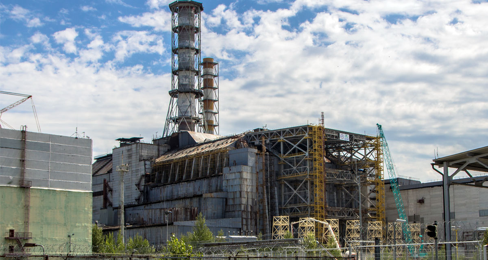

Home
Geschichte
Das Nukleare Zeitalter
Tauchen Sie ein in die Geschichte der Kernenergie und erfahren Sie mehr über die wichtigsten Meilensteine der Kernspaltung und Kernfusion.
Spaltung des Urans
Otto Hahn und Fritz Strassmann entdeckten die Kernspaltung von Uran-235. Diese Entdeckung legte den Grundstein für die Entwicklung von Kernenergie für zivile und militärische Zwecke.
Hiroshima
Hiroshima/Nagasaki, tragische Wendepunkte, Kraft der Kernspaltung, Intensivierung der Kernenergie-Debatte.
Wasserstoffbombe
Erste Wasserstoffbombe zündete 1952, markierter Meilenstein in kontrollierter Kernfusion, zeigte immense Energiemöglichkeiten.
Tschernobyl
Tschernobyl-Unfall (1986), schwere Atomkatastrophe, weitreichende Auswirkungen, verstärkte Sicherheitsbemühungen weltweit.
ITER-Projekt
ITER-Start 2007, internationales Projekt zur Erforschung der Fusionsenergie, zeigt Potenzial der Kernfusion für zukünftige Energiequellen. Mehr Erfahren.
Häufig gestellte fragen zur Kernspaltung
Kernspaltung ist ein Prozess, bei dem ein Atomkern in zwei oder mehr kleinere Kerne gespalten wird. Dabei werden große Mengen an Energie freigesetzt. Die Kernspaltung ist die Grundlage für die Kernenergiegewinnung in Kernkraftwerken und für die Kernwaffenproduktion.
Wenn du genauer wissen willst, wie Kernspaltung funktioniert, schau dir diesen Artikel an: Wie funktioniert Kernspaltung?
Kernenergie ist eine der umstrittensten Energiequellen. Sie hat viele Vorteile, wie die Fähigkeit, große Mengen an Energie zu erzeugen, und die Tatsache, dass sie weniger CO2-Emissionen als fossile Brennstoffe produziert. Allerdings wird sie durch viele Nachteile überschattet. Dazu gehören das Risiko von nuklearen Unfällen, wie die Katastrophen in Tschernobyl und Fukushima, und die Herausforderung, einen sicheren Ort für die langfristige Lagerung von radioaktivem Abfall zu finden. Diese Faktoren machen die Nutzung von Kernenergie zu einem komplexen und umstrittenen Thema.
Wenn du die Vor- und Nachteile von Kernenergie genauer betrachten willst, kannst du diesen Artikel lesen: Vor- und Nachteile von Kernenergie.
Atommüll ist ein Abfallprodukt der Kernenergieerzeugung. Er ist weiterhin ein ungelöstes Problem. Atommüll enthält radioaktive Materialien, die für viele tausend Jahre gefährlich bleiben können. Die sichere und dauerhafte Lagerung dieses Abfalls ist eine der größten Herausforderungen der Kernenergie. Es gibt derzeit keine endgültige Lösung für die Entsorgung von Atommüll, und die Suche nach sicheren und langfristigen Lagerstätten ist ein kontroverses und komplexes Thema. Darüber hinaus ist die Behandlung und Lagerung von Atommüll teuer und birgt Risiken für die Umwelt und die menschliche Gesundheit.
Mehr über den Atommüll findest du hier: Atommüll.
Wenn du mehr über die Entsorgung von Atommüll wissen willst, kannst du im
folgenden Artikel weiterlesen: Endlager.
Häufig gestellte fragen zur Kernfusion
Kernspaltung spaltet schwere Atomkerne, erzeugt Wärme in Kernreaktoren und produziert radioaktive Abfälle. Kernfusion verschmilzt leichte Atomkerne, potenziell eine saubere Energiequelle ohne langfristige radioaktive Abfälle. Während Kernspaltung in der Energieerzeugung etabliert ist, steht die kontrollierte Kernfusion noch vor technischen Herausforderungen.
Wenn du mehr lesen möchtest über den Unterschied zwischen Kernfusion und Kernspaltung, kannst du hier weiterlesen: Differenz zwischen Kernfusion und Kernspaltung
Die Kernfusion ist ein physikalischer Prozess, bei dem zwei leichte Atomkerne zu einem schwereren Kern verschmelzen und dabei enorme Energiemengen freisetzen. Hohe Temperaturen und Drücke, ähnlich den Bedingungen im Inneren von Sternen, sind erforderlich, um die Fusion zu initiieren. In einem kontrollierten Umfeld, wie einem Fusionsreaktor, wird das heiße Plasma durch Magnetfelder zusammengehalten. Die Herausforderung besteht darin, die Fusion stabil aufrechtzuerhalten und mehr Energie zu gewinnen, als für ihre Erzeugung benötigt wird.
Die genaue Funktionsweise der Kernfusion kannst du hier nachlesen: Wie funktioniert Kernfusion?
Vorteile:
Die Kernfusion verspricht zahlreiche Vorteile, darunter eine unerschöpfliche
Brennstoffquelle durch Wasserstoffisotope, geringe Mengen langfristig radioaktiver
Abfälle, keine CO2-Emissionen während des Reaktionsprozesses und eine hohe
Energieausbeute, die effiziente Stromerzeugung ermöglicht.
Nachteile:
Trotz vielversprechender Aspekte stehen Herausforderungen im Weg, darunter
technologische Schwierigkeiten bei der Aufrechterhaltung der Fusion, hohe
Investitionskosten für die Entwicklung von Fusionsreaktoren, die Entstehung von
radioaktiven Nebenprodukten, und die Tatsache, dass die Kernfusionstechnologie noch
nicht marktfähig ist.
Weiter Informationen über die Vor- und Nachteile der Kernfusion findest du hier: Vor- und Nachteile von Kernfusion